A trail feels different
when you can hear it.
Արահետն այլ է,
երբ լսում ես այն։
Тропа звучит иначе,
когда её слышно.
Everyone has their own reason to hike. Ours is simple: in a small group you experience nature, each other, and yourself in a completely different way. Յուրաքանչյուրն իր պատճառն ունի արշավելու։ Մերը պարզ է՝ փոքր խմբում մարդը բոլորովին այլ կերպ է զգում բնությունը, իրար և ինքն իրեն։ У каждого своя причина ходить в походы. Наша проста: в маленькой группе ты совсем иначе чувствуешь природу, друг друга и себя.
The usual tourՍովորական տուրОбычный тур
A long queue on a narrow path.Երկար հերթ նեղ արահետին։Длинная очередь на узкой тропе.
That TrailThat TrailThat Trail
A pace that suits everyone, and room to breathe.Բնական տեմպ ու տեղ՝ շնչելու։Естественный темп и место, чтобы дышать.
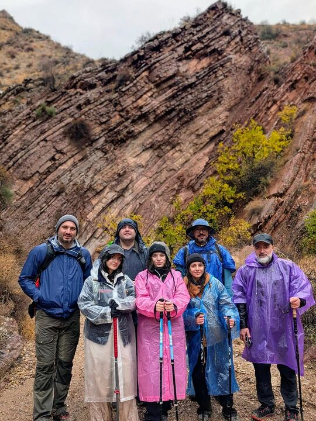
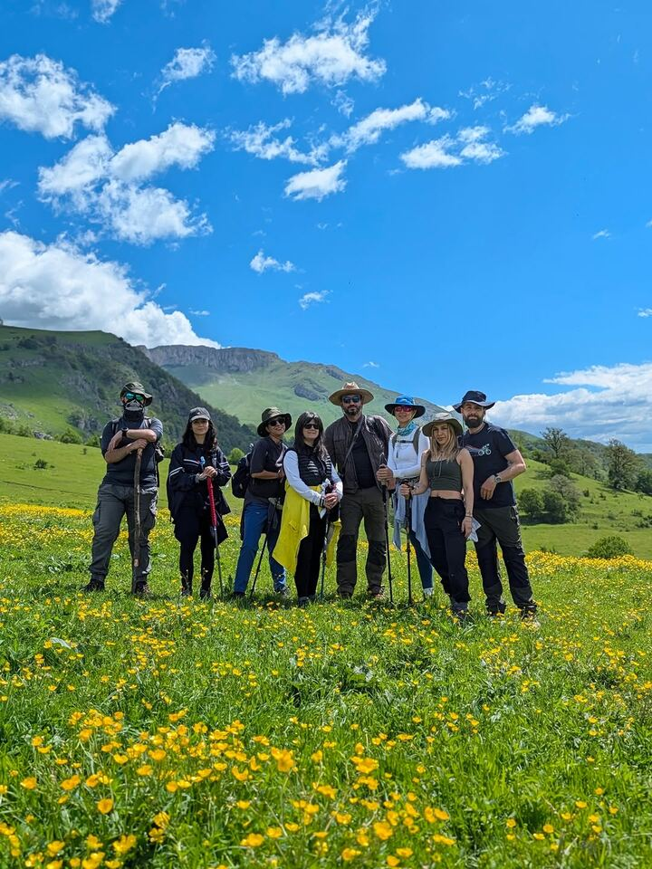
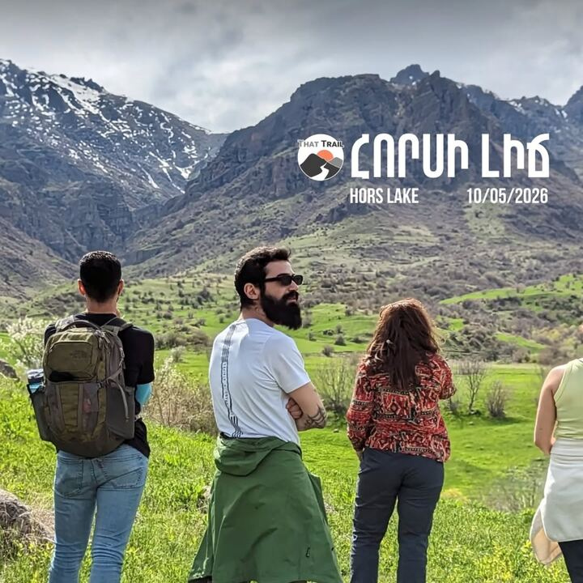
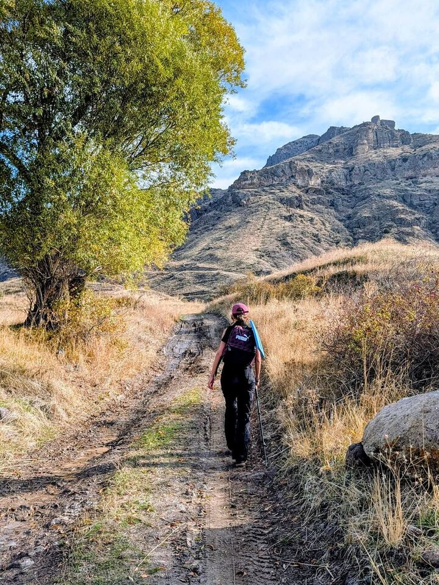
A natural paceՆերդաշնակ տեմպЕстественный темп
Small groups move like one person. Nobody is rushed and nobody waits around.Փոքր խումբը շարժվում է ներդաշնակ՝ ոչ ոք չի շտապում, ոչ ոք չի սպասում։Маленькая группа идёт как один человек — никто не спешит и не ждёт.
Freedom to decideՈրոշելու ազատությունСвобода решать
Stay longer at the viewpoint, take the detour to the spring. With a few people, there's room for small wishes.Մնալ տեսարանի մոտ, թեքվել դեպի աղբյուրը. փոքր խմբում տեղ կա յուրաքանչյուրի ցանկության համար։Задержаться на виде, свернуть к роднику — в маленькой группе есть место для желаний каждого.
Joy, actually sharedԿիսված ուրախությունРадость, которой делятся
You came to get away from noise. Here you share the summit with people you actually got to know.Եկել ես աղմուկից հեռու։ Այստեղ գագաթը կիսում ես մարդկանց հետ, ում իրոք ճանաչեցիր։Вы пришли за тишиной. Здесь вершину делишь с теми, с кем успел по-настоящему познакомиться.
Gorges, ridges,
monasteries, 3000 m.
Կիրճեր, լեռնաշղթաներ,
վանքեր, 3000 մ։
Ущелья, хребты,
монастыри, 3000 м.
← drag the trailքաշիր արահետըлистай тропу →
Every Saturday,
a new stamp.
Ամեն շաբաթ՝
նոր կնիք։
Каждую субботу —
новая отметка.
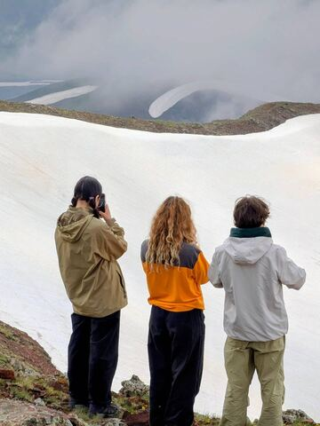
Summits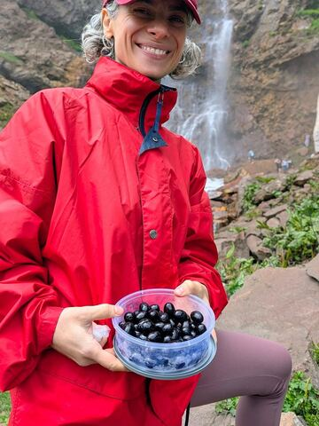
Waterfalls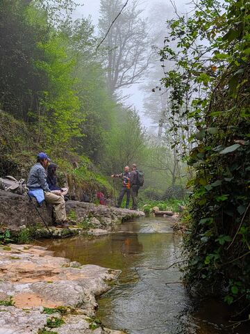
Forests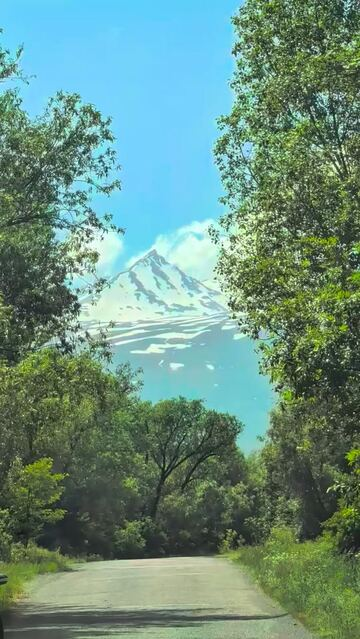
Roads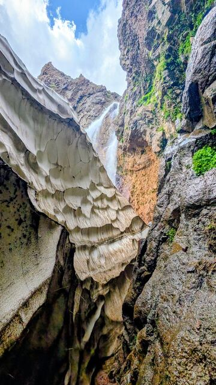
Gorges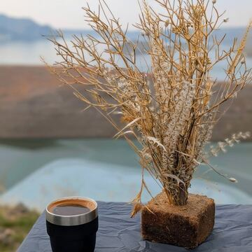
Moments
Three steps
to the trailhead.
Երեք քայլ
մինչև արահետ։
Три шага
до тропы.
Spot the next routeԳտիր հաջորդ երթուղինНайди маршрут
New hikes are announced on Telegram and Instagram, with the route, date and difficulty.Նոր արշավները հայտարարվում են Telegram-ում և Instagram-ում՝ երթուղով, ամսաթվով և բարդությամբ։Новые походы анонсируются в Telegram и Instagram: маршрут, дата, сложность.
Claim your spotԱմրագրիր տեղդЗайми место
Spots are few by design. Message or call, and you're on the list.Տեղերը միտումնավոր քիչ են։ Գրիր կամ զանգիր, և դու ցուցակում ես։Мест специально мало. Напиши или позвони, и ты в списке.
Walk. Breathe. Eat.Քայլիր։ Շնչիր։ Ճաշիր։Иди. Дыши. Ешь.
Bring good shoes and a raincoat (Armenian weather has opinions). We'll find the lunch spot.Լավ կոշիկ ու անձրևանոց վերցրու (հայկական եղանակը իր կարծիքն ունի)։ Ճաշի տեղը մենք կգտնենք։Хорошая обувь и дождевик (у армянской погоды своё мнение). Место для обеда найдём мы.
Small groups.
Long story.
Փոքր խմբեր։
Երկար պատմություն։
Маленькие группы.
Долгая история.
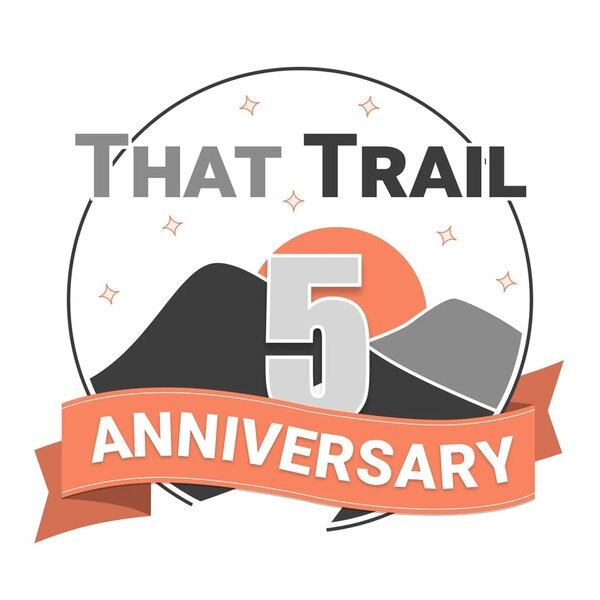
2026 is our fifth year on the trail. Thank you to everyone who walked with us.2026-ը մեր հինգերորդ տարին է արահետին։ Շնորհակալություն բոլոր նրանց, ովքեր քայլեցին մեզ հետ։2026 — наш пятый год на тропе. Спасибо всем, кто шёл с нами.
Save me
a spot.
Ինձ համար
տեղ պահեք։
Оставьте мне
место.
Groups fill up fast because they're small on purpose. Խմբերը արագ են լրանում, քանի որ միտումնավոր փոքր են։ Группы быстро заполняются: они маленькие намеренно.